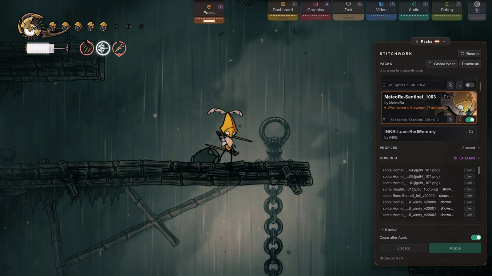

优先级与冲突
发布 · 面向所有人
两个资源包改了同一张精灵图，哪个会生效？
这一页讲清规则、怎样控制结果，以及怎样看懂资源包管理器里的被覆盖折叠栏。
你将学会：预判冲突时哪个资源包会胜出，通过调整顺序改变结果，看懂被覆盖折叠栏，并认出这条规则里几个有意为之的例外。
一句话说清规则
如果两个已启用的资源包替换的是同一项资源，优先级更高的那个资源包会生效。这一页剩下的内容，都是从这条规则推出来的。
优先级就是列表顺序
在资源包管理器（资源包面板）里，资源包按优先级排列，越靠上，优先级越高。两个资源包都改动的资源，由列表中位置更靠上的资源包生效。想改变谁胜出，就调整顺序——把卡片往上或往下拖，然后点击应用。卡片底栏左端的拖动手柄表示它可以拖动，鼠标指向它会提示“列表中靠上的资源包优先。”在点击应用之前，什么都不会定下来；不点应用，调整顺序只会改变面板上的显示，不会改变游戏。
每张卡片还会统计自己输掉了多少项。它的状态行会显示，例如 4 项被 Crystal Hornet 覆盖（或 4 项被 2 个资源包覆盖）：也就是说，它有四项资源显示的是更靠上那个资源包的版本。这个数字跟着你暂存的顺序走，所以拖动之后、点击应用之前，卡片上就已经显示新的结果了。设置了条件的卡片，这一行则会用一句话显示它的条件。
可以这样理解：冲突不是两个资源包整体对决，而是逐项资源来比。如果文件恰好这样分布，资源包 X 可以拿下披风，同时资源包 Y 拿下音乐。优先级只决定两者都想替换的那些资源。
看懂“被覆盖”折叠栏
资源包管理器不会把冲突藏起来——它会把冲突列在资源包列表下方的被覆盖折叠栏里。标题栏显示无，或者显示数量，例如 3 项资源。点击标题栏就能展开列表。每一行的格式是 <key> shows <winner> over <loser>，哪项资源被替换、被谁替换，一目了然。某一行里出现 (base)，指的是工作区文件夹。大多数资源键是精灵图或贴图的路径。声音显示为 sound:<clip>，过场动画显示为 video:<cinematic>，场景的环境光显示为 <scene>/ambient。Clips/ 里的贴布绣帧显示为 <collection>/。
每一行有一个按钮：
- 打开会在文件夹里显示落败的那个文件（或者打开落败资源包的文件夹）。
- 解决冲突项：如果是文本条目，而且胜出的是工作区文件夹，这一行的打开会换成它。它会打开文本标签页，把那个资源包的文本和工作区文件夹里的文本放在一起对照。
左下角的状态角标也会显示总数：数量大于 0 时，显示为“n 项被覆盖”。不用打开任何面板，就能一眼看出当前这套搭配“缠得有多乱”。
名称相同、内容也逐字节相同的两个图片文件不算冲突，所以两个资源包里一模一样的副本不会列出来。对于声音和视频，名称相同、文件大小也相同，就算作同一个文件。

跨资源包时的整图与单张文件
在同一个资源包里，单张精灵图文件会画在这个包自己的整图上面（见移植既有作品：整表与 CKC里的“整图与单张精灵可以叠加”）。但这种叠加只在资源包内部有效。整图替换的是整个材质，所以它算作一项资源：如果更靠上的资源包提供了整图，更靠下的资源包里同一材质的单张文件就不会显示。被覆盖折叠栏会把它列为一行 sheet:，显示胜出的是更靠上的那个资源包。鼠标指向这一行，提示框会告诉你：更靠上那个资源包的整图占据了整个材质，以及你可以怎么做。
想让你的单张修正盖过别的资源包的整图（比如某个 Customizer 皮肤）？把你的资源包移到它上面，再点应用。
如果两个资源包都为同一张 Texture2D 贴图页提供了整图，显示的是更靠上那个资源包的整图。文件名改变不了这一点：更靠下的资源包哪怕用的是贴图在 Unity 里的完整名称，也会输给更靠上的资源包里用通俗名命名的文件。
对精灵图来说，你的工作区文件夹排在所有资源包之后。如果某个已启用的资源包提供了某个材质的整图，工作区文件夹里这个材质的单张精灵图就不会显示。
贴布绣帧也遵循同样的规则（贴布绣）。Clips/ 里的帧会盖过它自己所在资源包的整图，也会盖过更靠下资源包的整图。如果更靠上的资源包为这一帧的材质提供了整图，这一帧显示的就是那张整图，被覆盖折叠栏也会列出这一帧。你工作区文件夹里的 Clips/ 帧也是如此。
例外：游戏内编辑器写入的内容
所有资源类型都遵循“资源包优先于工作区文件夹”——文本和颜色规则除外。对这两类来说，工作区文件夹优先于所有资源包。
这是有意这样设计的。文本标签页的编辑器面板（游戏文本模式下）会保存到工作区文件夹的 Text/，图形标签页的颜色模式会保存到工作区文件夹的 Recolor/。让工作区文件夹优先，就能保证你刚在编辑器里做的修改，不会被已安装的资源包悄悄盖住。总结一下：精灵图、T2D、音频、视频 → 资源包优先于工作区文件夹；文本和颜色规则 → 工作区文件夹优先于资源包。（详见文本与对话和色彩。）
“我的资源包本来好好的，加了一个新的就不行了”
几乎都是因为：新加的资源包覆盖了同一项资源。打开被覆盖折叠栏——它会列出具体是哪些资源键冲突了，现在又是谁胜出。你卡片上那行“被……覆盖”也会写出胜出的资源包。
- 如果两个资源包都可以改这项资源，而你想让自己的版本显示出来，就把你的资源包拖到新资源包上面，然后点击应用。
- 如果新资源包根本不该碰你的资源，原因在那个资源包里：它的文件名起错了，或者它改动的范围超出了作者的本意。请告诉它的作者，因为要在那个资源包里修复。
有意叠加
冲突不一定是意外——你也可以有意把资源包叠起来用：
- 底包 + 点缀包。把一套完整皮肤放在下面，把一个“只改披风”的小包放在上面；点缀包拿下它那几项资源，其余的都归底包。
- 扩展包。在资源包管理器里，你可以让一个资源包只在另一个资源包开启时才生效（条件的判断对象选资源包，比较方式选已启用），这样它只会叠加在主资源包之上——参见条件激活。抽屉里的条件属于玩家自己的游戏，而不属于资源包，所以扩展包的 README 应该告诉玩家要设置哪个条件。资源包也可以为自己的一部分内容自带条件，也就是子集（预览功能，见条件激活一页的末尾）。
这样用的话，优先级就是你分层叠加的工具，被覆盖的数量也只是各层相接的那道缝。
相关页面
- 具体操作 → 资源包管理器
- 为什么载入时替换能让这一切干净利落 → Stitchwork 工作原理